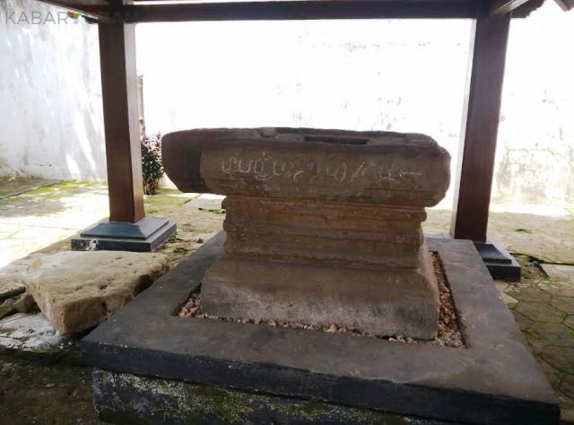
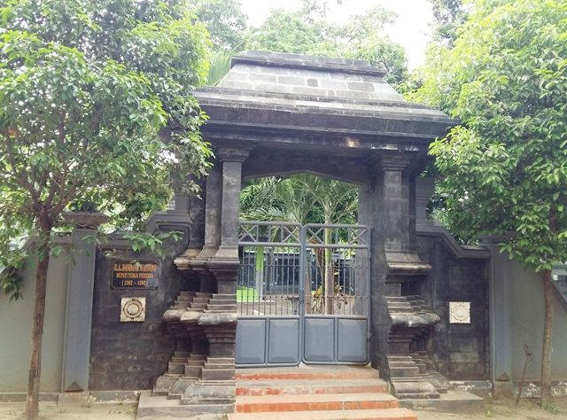

— History of Tuban —
Ada beberapa pendapat mengenai sejarah tentang nama dari Tuban ini, berikut adalah beberapa sejarah singkat dari asal usul nama "Tuban"

Watu tiban
Tuban berasal dari istilah "Watu Tiban". Waktu itu pusaka kerajaan Majapahit yang berbentuk batu, dibawa ke Demak oleh sepasang Burung Bangau. Sesampainya di suatu daerah batu pusaka tersebut jatuh. Tempat dimana benda pusaka jatuh diberi nama Tuban.

Berasal dari istilah "Metu Banyune"
Tuban berasal dari istilah "Metu Banyune". Raden Dandang Wacana (Bupati Tuban pertama) menerima petunjuk membuka hutan Papringan untuk dijadikan pusat pemerintahan (Sekarang Bektiharjo). Waktu membuka hutan keluarlah sumber air, yang dalam bahasa Jawa Me "Tu" "Ban" yune.

Akronim dari ngetuaken kewajiban
Tuban berasal dari istilah "Ngetuake Kewajiban". Menurut kebiasaan sehari-hari masyarakat Tuban, mudah diarahkan melaksanakan suatu tugas dan kewajiban. Dalam bahasa Jawa adalah Nges"tu" ake kewaji "ban".